SIGHT — X CAMPAIGN · 15-BANNER CONTACT SHEET
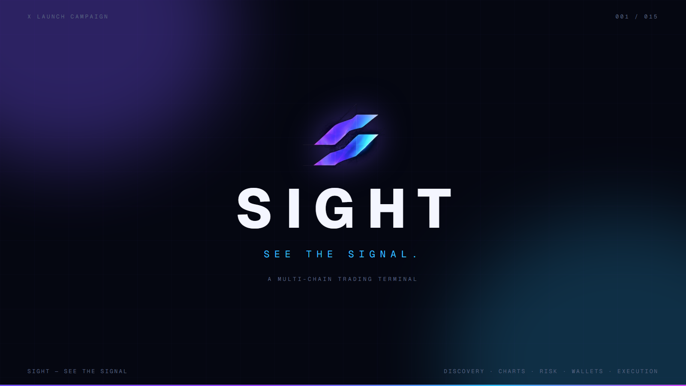
01 · BRAND POSTER — SEE THE SIGNAL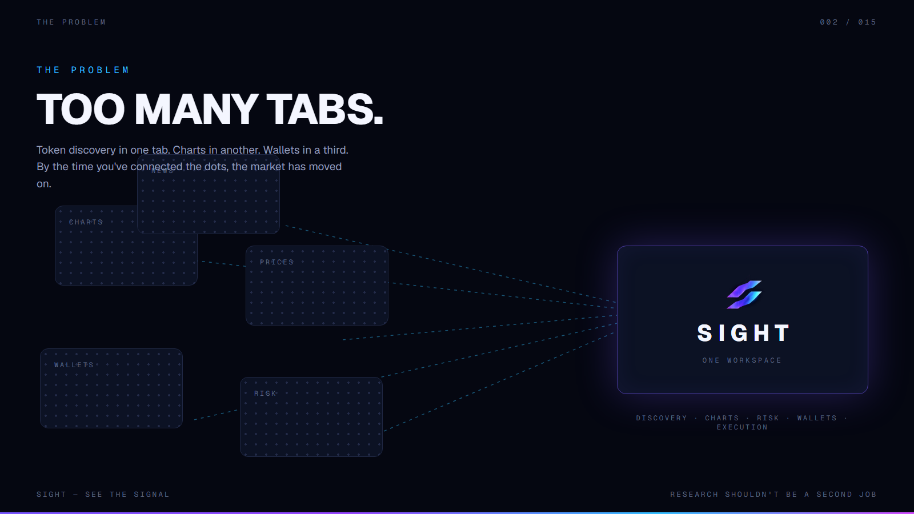
02 · EDITORIAL — TOO MANY TABS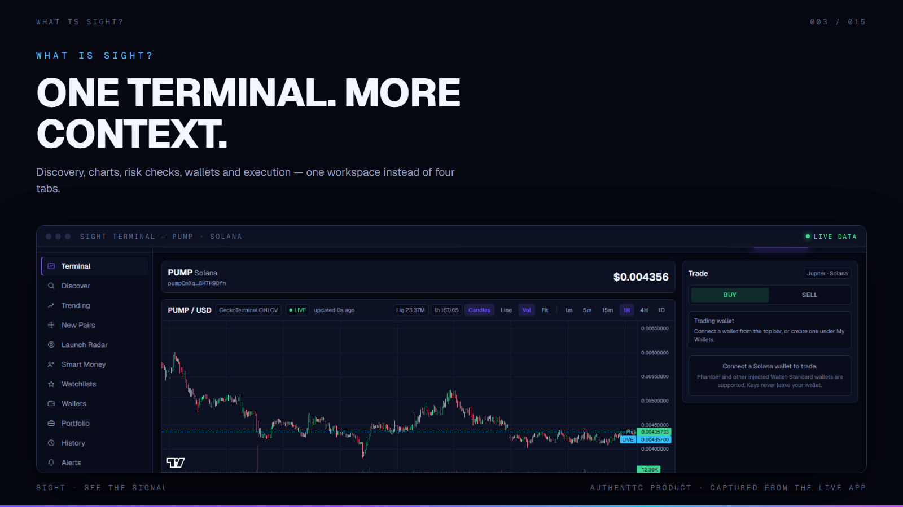
03 · AUTHENTIC TERMINAL — ONE TERMINAL, MORE CONTEXT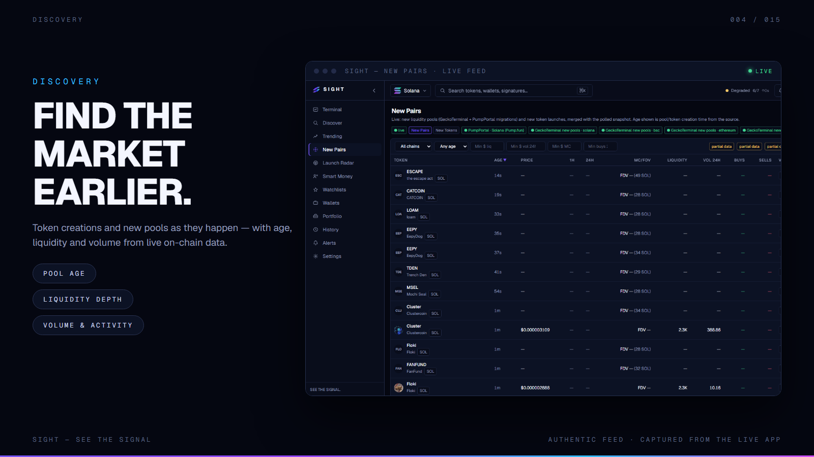
04 · AUTHENTIC DISCOVERY FEED — FIND THE MARKET EARLIER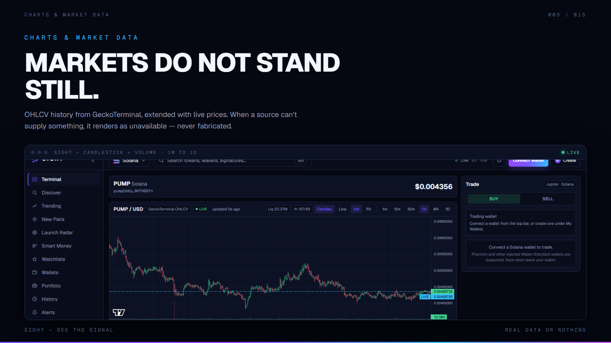
05 · AUTHENTIC CHARTS — MARKETS DO NOT STAND STILL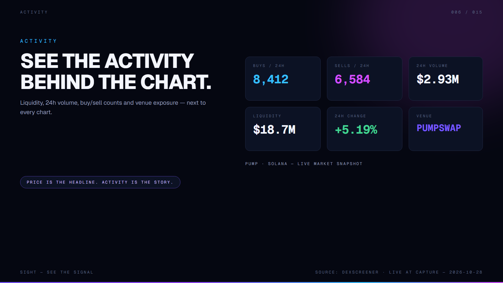
06 · ACTIVITY DATA — SEE THE ACTIVITY BEHIND THE CHART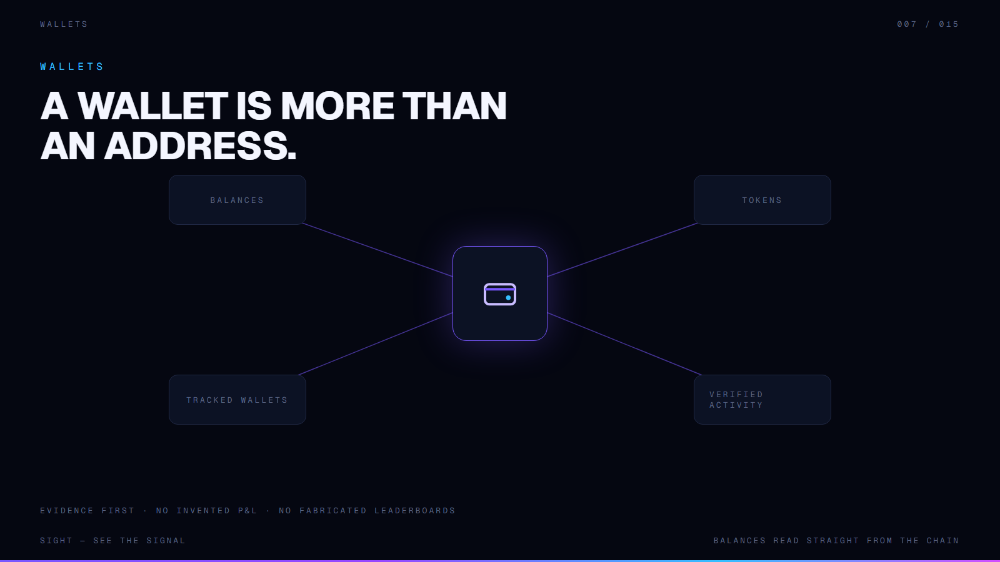
07 · WALLET DIAGRAM — MORE THAN AN ADDRESS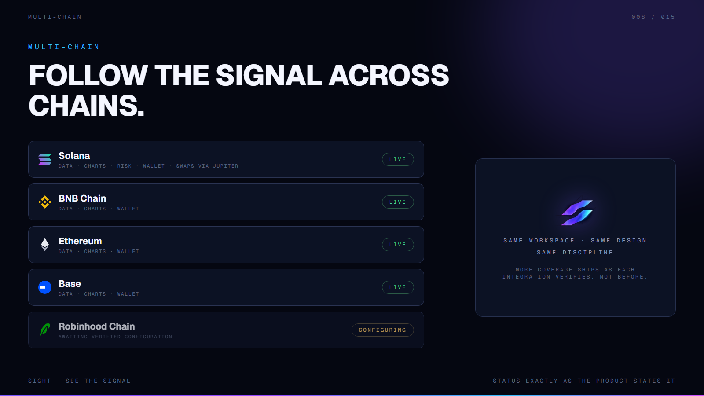
08 · MULTI-CHAIN — FOLLOW THE SIGNAL ACROSS CHAINS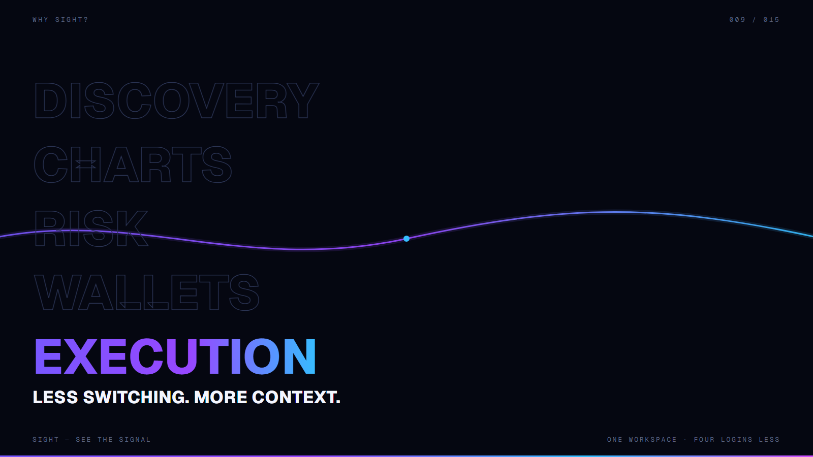
09 · TYPOGRAPHIC POSTER — LESS SWITCHING, MORE CONTEXT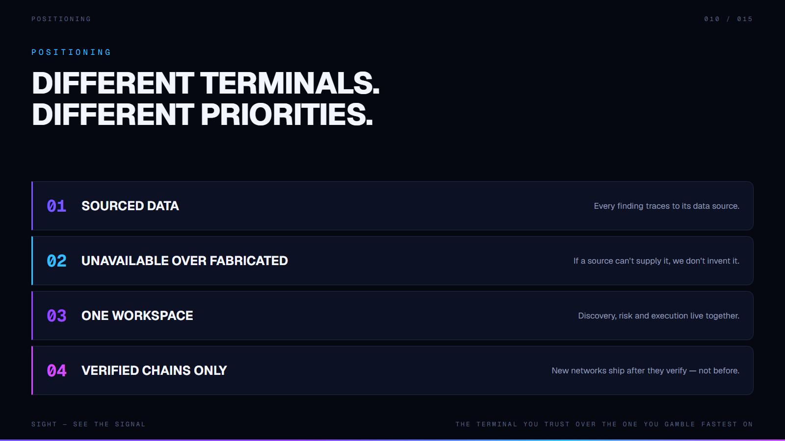
010 · PRINCIPLES — DIFFERENT TERMINALS, DIFFERENT PRIORITIES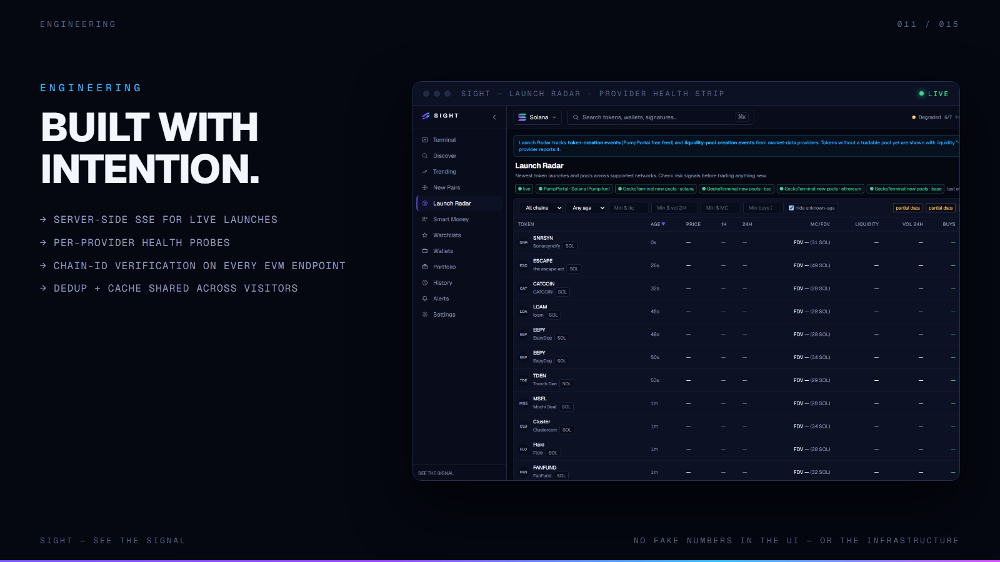
011 · ENGINEERING — BUILT WITH INTENTION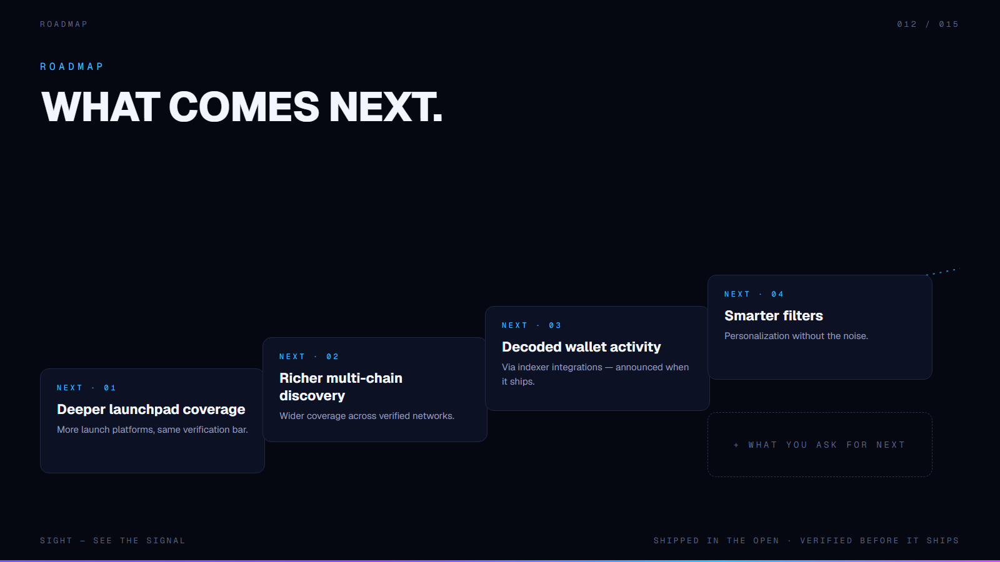
012 · ROADMAP — WHAT COMES NEXT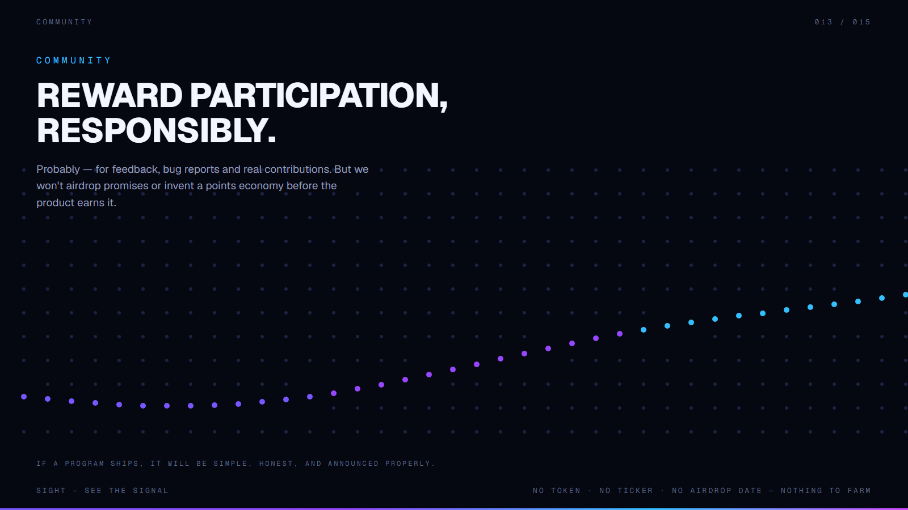
013 · COMMUNITY — REWARD PARTICIPATION, RESPONSIBLY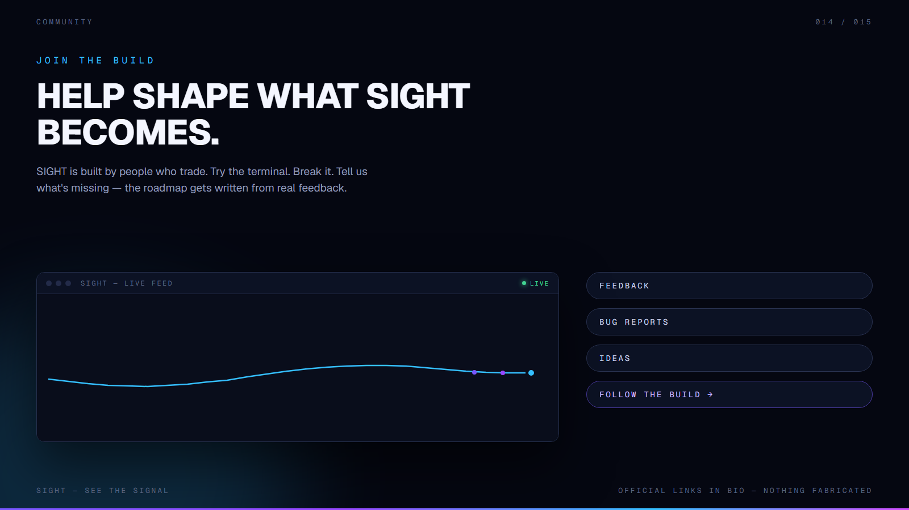
014 · COMMUNITY — HELP SHAPE WHAT SIGHT BECOMES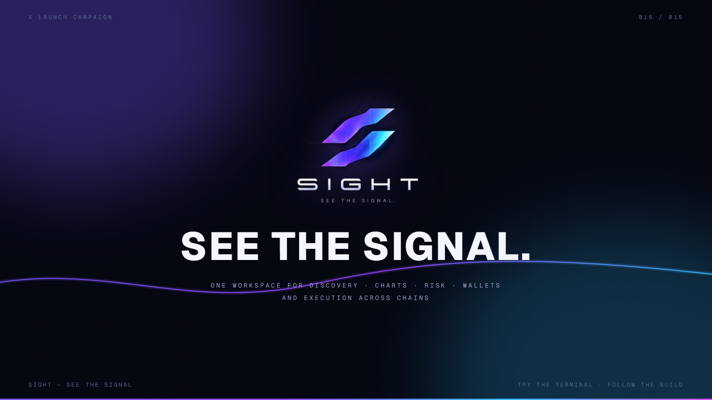
015 · CLOSING POSTER — SEE THE SIGNAL